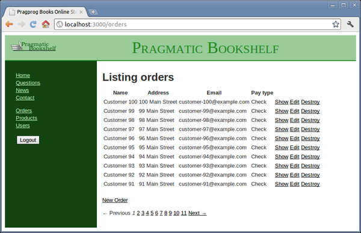

At the moment, we have a few products, a few carts at any one time, and a few line items per cart or order, but we can have essentially an unlimited number of orders, and we hope to have many—enough so that displaying all of them on an orders page will quickly become unwieldy. Enter the will_paginate plugin. This plugin extends Rails to provide this much-needed function.
Why a plugin? Back in Rails 1.0, this functionality was part of Rails itself. But there were competing ideas on how this could be implemented and improved, and the function was broken out in order to enable innovation to thrive.
The first thing we need to do is to inform Rails of our intent to use the plugin. We do that by modifying the Gemfile file. We need to specify that we want a version that is greater than or equal to 3.0 because previous versions don’t work with Rails 3.1.
| rails31/depot_q/Gemfile | |
source 'http://rubygems.org' |
|
gem 'rails', '3.1.0' |
|
# Bundle edge Rails instead: |
|
# gem 'rails', :git => 'git://github.com/rails/rails.git' |
|
gem 'sqlite3' |
|
# Gems used only for assets and not required |
|
# in production environments by default. |
|
group :assets do |
|
gem 'sass-rails', " ~> 3.1.0.rc" |
|
gem 'coffee-rails', "~> 3.1.0.rc" |
|
gem 'uglifier' |
|
end |
|
gem 'jquery-rails' |
|
# Use unicorn as the web server |
|
# gem 'unicorn' |
|
# Deploy with Capistrano |
|
# gem 'capistrano' |
|
# To use debugger |
|
# gem 'ruby-debug19', :require => 'ruby-debug' |
|
group :test do |
|
# Pretty printed test output |
|
gem 'turn', :require => false |
|
end |
|
| * | gem 'will_paginate', '~> 3.0' |
With this in place, we can use the bundle command to install our dependencies:
depot> bundle install |
Depending on your operating system and your setup, you may need to run this command as root.
The bundle command will actually do much more. It will cross-check gem dependencies, find a configuration that works, and download and install whatever components are necessary. But this needn’t concern us now; we added only one component, and we can rest assured that this one is included in the gems that the bundler installed.
We must do one last thing after updating or installing a new gem: restart the server. Although Rails does a good job of detecting and keeping up with your latest changes to your application, it is impossible to predict what needs to be done when an entire gem is added or replaced.
Now let’s generate some test data. We could click repeatedly on the buttons we have, but computers are good at this. This isn’t exactly seed data, simply something done once and thrown away. Let’s create a file in the script directory.
This will create 100 orders with no line items in them. Feel free to modify the script to create line items if you are so inclined. Note that this code does all this work in one transaction. This isn’t precisely required for this activity but does speed up the processing.
Note that we don’t have any require statements or initialization to open or close the database. We will allow Rails to take care of this for us:
rails runner script/load_orders.rb |
Now that the setup is done, we are ready to make the changes necessary to our application. First, we will modify our controller to call paginate, passing it in the page and the order in which we want the results displayed:
Next, we will add links to the bottom of our index view:
| rails31/depot_q/app/views/orders/index.html.erb | |
<h1>Listing orders</h1> |
|
<table> |
|
<tr> |
|
<th>Name</th> |
|
<th>Address</th> |
|
<th>Email</th> |
|
<th>Pay type</th> |
|
<th> </th> |
|
<th> </th> |
|
<th> </th> |
|
</tr> |
|
<% @orders.each do |order| %> |
|
<tr> |
|
<td><%= order.name %></td> |
|
<td><%= order.address %></td> |
|
<td><%= order.email %></td> |
|
<td><%= order.pay_type %></td> |
|
<td><%= link_to 'Show', order %></td> |
|
<td><%= link_to 'Edit', edit_order_path(order) %></td> |
|
<td><%= link_to 'Destroy', order, confirm: 'Are you sure?', |
|
method: :delete %></td> |
|
</tr> |
|
<% end %> |
|
</table> |
|
<br /> |
|
<%= link_to 'New Order', new_order_path %> |
|
| * | <p><%= will_paginate @orders %></p> |
And that is all there is to it! The default is to show thirty entries per page, and the links will show up only if there are more than one page of orders. The controller specifies the number of orders to display on a page using the :per_page option. See Figure 26, Showing ten orders out of more than a hundred.
|  |
|
Figure 26. Showing ten orders out of more than a hundred |
The customer likes it. We’ve implemented product maintenance, a basic catalog, and a shopping cart, and now we have a simple ordering system. Obviously we’ll also have to write some kind of fulfillment application, but that can wait for a new iteration. (And that iteration is one that we’ll skip in this book; it doesn’t have much new to say about Rails.)
In a fairly short amount of time, we did the following:
We created a form to capture details for the order and linked it to a new order model.
We added validation and used helper methods to display errors to the user.
We installed and used a plugin to paginate the list of orders.
We provided a feed so that the administrator can monitor orders as they come in.
Here’s some stuff to try on your own:
Get HTML-, XML-, and JSON-formatted views working for who_bought requests. Experiment with including the order information in the XML view by rendering @product.to_xml(include: :orders). Do the same thing for JSON.
What happens if you click the Checkout button in the sidebar while the checkout screen is already displayed? Can you find a way to disable the button in this circumstance?
The list of possible payment types is currently stored as a constant in the Order class. Can you move this list into a database table? Can you still make validation work for the field?
(You’ll find hints at http://www.pragprog.com/wikis/wiki/RailsPlayTime.)